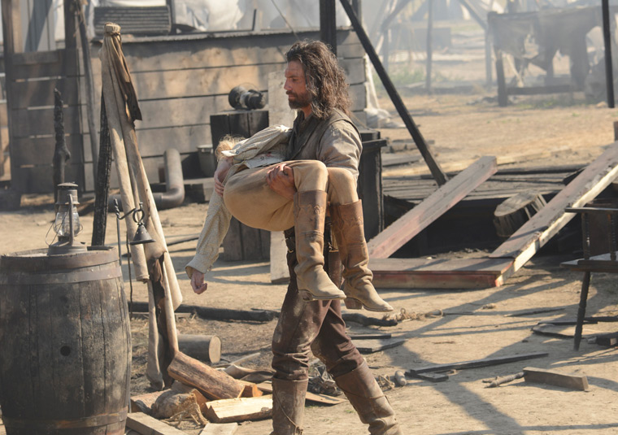
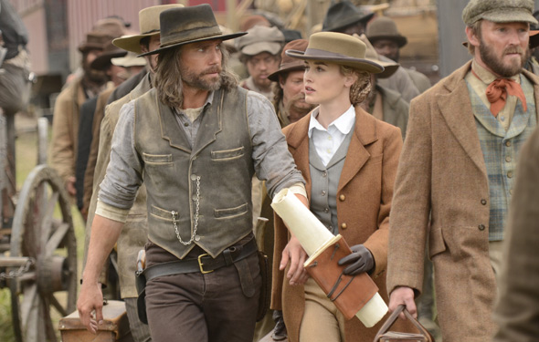

Genre
Western
Description
Hell on Wheels is an American Western television series about the construction of the First Transcontinental Railroad across the United States.
The series, which features Anson Mount, Colm Meaney, Common, and Dominique McElligott, follows the Union Pacific Railroad and its surveyors,
laborers, prostitutes, mercenaries, and others who lived, worked and died in the mobile encampment called "Hell on Wheels" that followed the
railhead west across the Great Plains. In particular, the story focuses on Cullen Bohannon, a former Confederate soldier (Mount) who, while
working as foreman and chief engineer on the railroad, initially attempts to track down the Union soldiers who murdered his wife and young
son during the American Civil War.
Episodes list

Episode 2 : Immoral Mathematics

Episode 3 : A New Birth of Freedom